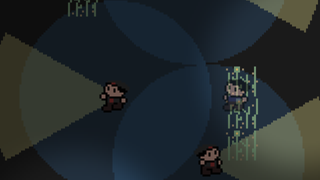

About Me (yuck)
Box 1 Box 1 Box 1 Box 1 Box 1 Box 1 Box 1 Box 1 Box 1 Box 1 Box 1 Box 1 Box 1 Box 1 Box 1 Box 1 Box 1 Box 1 Box 1 Box 1 Box 1 Box 1 Box 1 Box 1 Box 1 Box 1 Box 1 Box 1 Box 1 Box 1 Box 1 Box 1 Box 1 Box 1 Box 1 Box 1 Box 1 Box 1 Box 1 Box 1 Box 1 Box 1 Box 1 Box 1 Box 1 Box 1 Box 1 Box 1 Box 1 Box 1 Box 1 Box 1 Box 1 Box 1 Box 1 Box 1 Box 1 Box 1 Box 1 Box 1 Box 1 Box 1 Box 1 Box 1 Box 1 Box 1 Box 1 Box 1 Box 1
Game Development Projects
matchris (2022)
tile-matching puzzle game

- Solo project using the Godot Engine
- Complete game with sfx, music, menus, saves, settings, and accessibility
Beyond a Shadow of a Crouch (2021)
top-down stealth game prototype

- Solo project using GameMaker Studio 2
- Focus on self-preservation in enemy decision trees
- Built over 4 days
Level Design: Super Mario Maker
Sometimes Super Mario Maker level-makers like to play tricks on the player to add a bit of life to a difficult puzzle or platforming challenge.
These tricks are referred to in the SMM community as "trolls", and levels that are built entirely out of these tricks, repeatedly anticipating and subverting the player's expectations, are known as "troll levels".
Making a good troll level requires finesse to ensure that the trolls are effective, the deception is entertaining, and the player has enough information to continue through the level once they have been "trolled". These elements make the playtesting/revision loop crucial and reward a strong understanding of the player's thought process.
I've been a part of the community surrounding these levels since mid-2018, and they make up the majority of the levels showcased here.
Making a good troll level requires finesse to ensure that the trolls are effective, the deception is entertaining, and the player has enough information to continue through the level once they have been "trolled". These elements make the playtesting/revision loop crucial and reward a strong understanding of the player's thought process.
I've been a part of the community surrounding these levels since mid-2018, and they make up the majority of the levels showcased here.
What Are You Doing in My Thwomp? (2021)
troll level
A solo SMM2 troll level, mostly to prove to myself that I could still make one. Some of the best moments in this level (namely the bomb in room 2 and the spring in room 4) hinge on giving the player plenty of information but still knowing they'll do the wrong thing.
SMM2 Level Code: B5N-KNY-M2G
Playthroughs & Creator's Commentary
The CarlMoney Collab 3D (2020)
17-maker collab troll level

This was a 17-person project that I headed up over the 2 months leading up to May 11th, 2020. My contributions to this project included:
Playthroughs & Creator's Commentary
- creating a few modules to put into the level
- putting the level together out of the modules that the other builders and I created
- submitting the level to playtesters and watching their playthroughs
- revising the level based on the playtests
There and Back and There Again (2020)
challenge level
The goal of this level was to sidestep the "no checkpoints" restriction on levels with clear conditions. I accomplished this by adding pseudo-checkpoints through the use of powerups and powerup dispensers behind blocks that can only be broken in certain powerup states.
The part that makes the level interesting is that, although you're repeatedly going through the same area, the location of the most difficult part changes each time based on your powerup state:
The part that makes the level interesting is that, although you're repeatedly going through the same area, the location of the most difficult part changes each time based on your powerup state:
- Small Mario is tricky toward the end because the checkpoints don't work yet
- Super Mario has some difficulty with the low-flying ghosts and has to slow down and duck
- Builder Mario has to be careful with the ghosts over pits since the "checkpoints" can't save you from the abyss
SMM2 Level Code: 8DY-DGV-F5G
Demonstration Video
thank mr skeltrol (2019)
troll level
My second troll level. This was near the end of SMM1's lifespan (right before SMM2 came out) so the ending is a bit less complete than I would've liked. I brought in some of my skills in music levels and added some skeleton-themed songs. The moment just before collecting checkpoint 2 is a personal favorite.
- info about the level
- info about the level
- info about the level
SMM1 Level Code: 8BC6-0000-03EB-0D38
Playthrough Video (38:44-54:17)
The Pinnacarl of Larl Design. (2019)
troll level

This was my first successful troll level. The failed attempts before it taught me what I should be going for, and the playtesting I got on this one helped it swerve from disaster in the last few weeks before its final release. I'm particularly happy with the checkpoint 2 fakeout and the ending.
SMM1 Level Code: 1920-0000-0415-0793
Playthrough Videos